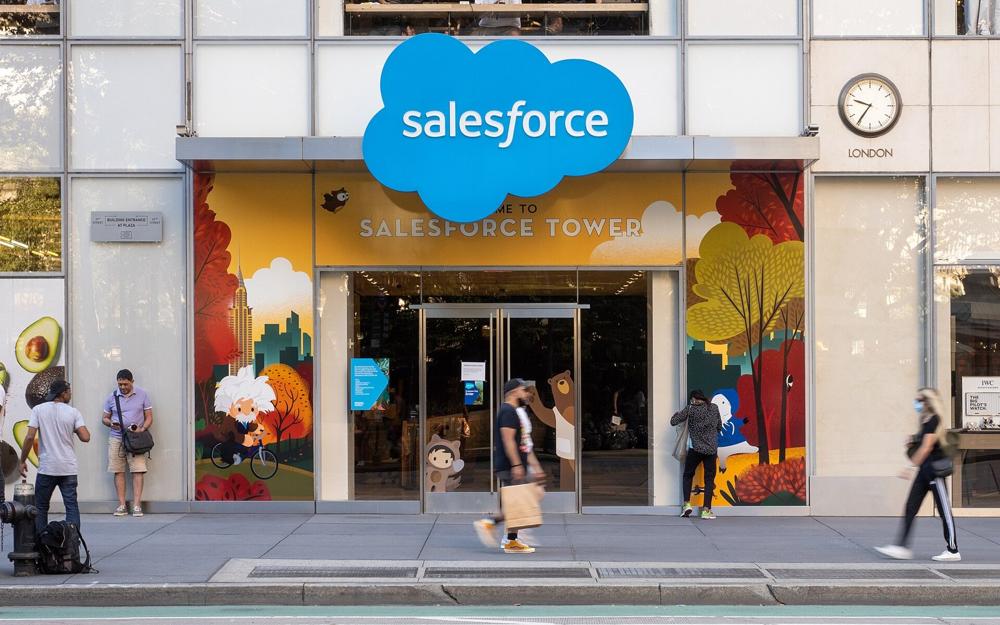

Salesforce −9,45%: perché l'intelligenza artificiale fa paura alle aziende del software
Il software in abbonamento è stato per vent'anni uno dei modelli di business più apprezzati dalla Borsa: ricavi ricorrenti, margini alti, clienti fedeli. Oggi i titoli del settore sono crollati per la seconda volta in poche settimane. Il timore è che l'intelligenza artificiale cambi il modo in cui le aziende pagano i programmi.

In sintesi
- Salesforce −9,45%, Intuit −7,17%, HubSpot −6,76%, ServiceNow −6,51%, Atlassian −5,98%; ETF sul software IGV −3,29%.
- In Europa SAP −5,58% e Dassault Systèmes −4,91%.
- Il timore: gli agenti di intelligenza artificiale potrebbero ridurre le licenze per utente su cui si regge il settore.
- Pesa anche la quotazione di Anthropic: per comprarla, alcuni investitori vendono altri titoli tecnologici.
- Da inizio anno Intuit −51,6%, HubSpot −46,1%, ServiceNow −39,4%, mentre il Nasdaq è a +4,7%.
Martedì 17 novembre Salesforce ha chiuso a 194,52 dollari (−9,45%): secondo Barron's è stato il peggior titolo dell'S&P 500. Con lei sono scese quasi tutte le grandi aziende del software: Intuit −7,17%, HubSpot −6,76%, ServiceNow −6,51%, Workday −5,80%. In Europa SAP ha perso il 5,58%. Salesforce e ServiceNow non avevano diffuso notizie proprie: secondo Yahoo Finance le vendite sono partite dopo il lancio di nuovi modelli di intelligenza artificiale di OpenAI.
La seduta del software
| Titolo | Chiusura 17 nov | Variazione | Da inizio anno | Che cosa vende |
|---|---|---|---|---|
| Salesforce | 194,52 $ | −9,45% | −26,6% | Gestione clienti |
| Intuit | 320,79 $ | −7,17% | −51,6% | Contabilità e tasse |
| HubSpot | 216,30 $ | −6,76% | −46,1% | Marketing e vendite |
| ServiceNow | 92,90 $ | −6,51% | −39,4% | Gestione dei processi aziendali |
| Atlassian | 140,98 $ | −5,98% | −13,1% | Strumenti per sviluppatori |
| Workday | 182,80 $ | −5,80% | −14,9% | Personale e finanza |
| Adobe | 235,55 $ | −4,25% | −32,7% | Grafica e documenti |
| SAP (Francoforte) | 201,50 € | −5,58% | −3,3% | Gestionali per le imprese |
| Microsoft | 506,24 $ | −2,27% | +4,7% | Software e cloud |
| ETF iShares sul software (IGV) | 95,74 $ | −3,29% | −9,4% | Paniere del settore |
La tabella mostra che la seduta di oggi non è un episodio isolato. Intuit, che produce programmi di contabilità e per la dichiarazione dei redditi, ha più che dimezzato il suo valore da gennaio. HubSpot e ServiceNow hanno perso fra il 39% e il 46%. Nello stesso periodo il Nasdaq è salito del 4,7% e l'indice dei semiconduttori del 36,1%: il mercato ha premiato chi fornisce le infrastrutture per l'intelligenza artificiale e penalizzato chi rischia di esserne sostituito. Microsoft, che vende sia software sia potenza di calcolo, ha chiuso a −2,27% ed è in rialzo da inizio anno.
| Da inizio anno | Variazione | Che cosa rappresenta |
|---|---|---|
| Indice dei semiconduttori (SOX) | +36,1% | Chi fornisce i chip per l'intelligenza artificiale |
| Nasdaq Composite | +4,7% | Il listino tecnologico nel suo insieme |
| Microsoft | +4,7% | Software e cloud, socio di OpenAI |
| ETF sul software (IGV) | −9,4% | Il paniere del software americano |
| Nvidia | −16,6% | Pesa il caso della successione |
| ServiceNow | −39,4% | Software per i processi aziendali |
Il modello che il mercato teme di perdere
Quasi tutte queste aziende vendono il loro software in abbonamento, e quasi tutte lo fanno pagare per utente: un'azienda con mille venditori compra mille licenze di Salesforce, una con cinquecento addetti al servizio clienti compra cinquecento licenze di ServiceNow. È un modello che ha funzionato per vent'anni, perché più l'azienda cliente cresce, più licenze compra.
Gli agenti di intelligenza artificiale, programmi che svolgono da soli compiti come rispondere ai clienti, compilare pratiche o aggiornare un archivio, mettono in discussione proprio questo meccanismo. Se un agente fa il lavoro di dieci persone, il cliente ha bisogno di meno licenze. E se il cliente può far costruire un'applicazione su misura a un modello di intelligenza artificiale, potrebbe non aver più bisogno del programma standard. «Le aziende di intelligenza artificiale cercheranno di distruggere Salesforce del tutto», ha detto un analista di RBC Capital Markets, Rishi Jaluria.
💡 Impara: il software in abbonamento (SaaS)
Il SaaS (Software as a Service, software come servizio) è il programma che non si compra una volta per tutte ma si usa via internet pagando un abbonamento, di solito annuale e per utente: è il seat-based pricing (prezzo per postazione). Per chi lo vende ha tre pregi: ricavi che si ripetono ogni anno, costi bassi per ogni cliente in più e clienti che difficilmente cambiano fornitore, perché i loro dati sono lì. Per questo la Borsa ha pagato a lungo queste aziende molto più di altre. Il rischio è che, se cambia il modo di pagare, cambino anche quei multipli.
Perché proprio oggi
I nuovi modelli di OpenAI. Secondo Yahoo Finance la discesa è cominciata dopo il lancio di nuovi modelli di OpenAI pensati per il lavoro d'ufficio e la programmazione. Ogni nuova versione più capace riaccende lo stesso timore.
La quotazione di Anthropic. Domani sera si fissa il prezzo dell'offerta di Anthropic, che può raccogliere fino a 64 miliardi di dollari. Secondo uno stratega di Fundstrat citato da Yahoo Finance, l'operazione sta «drenando liquidità»: per comprare le nuove azioni alcuni gestori vendono quelle che hanno già, e i titoli tecnologici più deboli sono i primi a pagare. Secondo Yahoo Finance, fra l'altro, la quota in Anthropic vale circa il 45% del portafoglio di partecipazioni strategiche di Salesforce, che a fine luglio valeva 11,3 miliardi.
Un settore già fragile. Il 28 ottobre ServiceNow aveva vissuto la peggiore giornata della sua storia, dopo aver indicato per il quarto trimestre una crescita del 18,5% dei contratti da incassare nei dodici mesi successivi, contro il 19,8% atteso. E secondo un sondaggio di Bank of America i gestori di fondi stanno riducendo le posizioni sulla tecnologia al ritmo più rapido dal 2006.
💡 Impara: perché i contratti già firmati contano più dei ricavi
Per un'azienda di software in abbonamento il dato che gli investitori guardano di più non sono i ricavi del trimestre, ma i contratti già firmati e non ancora incassati. ServiceNow li chiama cRPO (current remaining performance obligations, ricavi contrattualizzati dei prossimi 12 mesi): è il denaro che i clienti si sono già impegnati a pagare nell'anno successivo. Se cresce meno del previsto, significa che i clienti firmano meno o rinnovano per meno licenze, e i ricavi futuri rallenteranno anche se quelli di oggi sono buoni.
Gli argomenti di chi la pensa diversamente
Non tutti leggono così il futuro del settore. Chi è più ottimista fa notare che queste aziende possiedono i dati dei clienti e i processi su cui gli agenti dovranno lavorare, e che stanno già vendendo i propri agenti: Salesforce con Agentforce, ServiceNow con i suoi strumenti di automazione. Se riusciranno a farsi pagare per il lavoro svolto dagli agenti invece che per ogni utente, i ricavi potrebbero anche crescere. I conti dei prossimi mesi diranno quale delle due letture è più vicina alla realtà: per ora nei bilanci il rallentamento è modesto, mentre nei prezzi di Borsa è già molto evidente.
C'è poi un dato di prudenza. Le stesse aziende oggi in calo erano state considerate per anni le grandi vincitrici della digitalizzazione. Quando un intero settore scende per un timore che riguarda il futuro, i prezzi possono andare oltre la realtà in entrambe le direzioni.
Cosa guardare ora
Lunedì 24 novembre i conti di Workday, mercoledì 2 dicembre quelli di Salesforce: saranno le prime prove sui contratti e sulle licenze dopo questa ondata di vendite. Prima ancora, giovedì 19, il debutto di Anthropic al Nasdaq. E a mercati chiusi Nvidia ha pubblicato conti sopra le attese: un segnale che gli investimenti in intelligenza artificiale, per ora, continuano a crescere.
Nota metodologica: le chiusure e le variazioni da inizio anno (sull'ultima chiusura del 2025) sono quelle di Yahoo Finance; per SAP e Dassault Systèmes le chiusure delle Borse di Francoforte e Parigi. Le cause del calo sono riportate da Yahoo Finance; il giudizio sulla seduta di Salesforce è di Barron's, ripreso da Proactive Investors; i dati su ServiceNow, la quota di Salesforce in Anthropic, il sondaggio di Bank of America e la dichiarazione di Rishi Jaluria sono riportati da MLQ.ai, che cita Yahoo Finance, Investing.com e il podcast RiskReversal. Le date dei prossimi conti sono quelle indicate dalle società. Le fonti non concordano sui nomi dei nuovi modelli di OpenAI: per questo non li riportiamo.